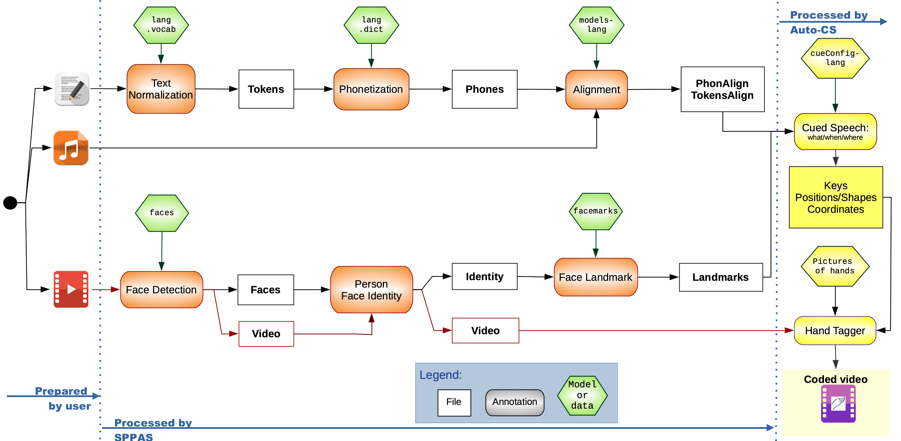

<!DOCTYPE html>
<html>

        <head>
            
            <title>Auto-CS doc</title>

            <meta charset="utf-8" />
            <meta name="viewport" content="width=device-width, initial-scale=1.0, user-scalable=yes" />
            <meta name="description" content="Python class documentation" />

            <link rel="logo icon" href="./statics/autocs32x32.ico" />
            <link rel="stylesheet" href="./Whakerexa-2.0/wexa_statics/css/wexa.css" type="text/css" />
            <link rel="stylesheet" href="./Whakerexa-2.0/wexa_statics/css/layout.css" type="text/css" />
            <link rel="stylesheet" href="./Whakerexa-2.0/wexa_statics/css/book.css" type="text/css" />
            <link rel="stylesheet" href="./Whakerexa-2.0/wexa_statics/css/menu.css" type="text/css" />
            <link rel="stylesheet" href="./Whakerexa-2.0/wexa_statics/css/code.css" type="text/css" />
            <link rel="stylesheet" href="./statics/clamming.css" type="text/css" />

            <!-- Whakerexa JS loader: ES6 modules on http(s), bundle on file:// -->
            <script>
            (function () {
              const usingFile = (window.location.protocol === 'file:');
              const s = document.createElement('script');
            
              if (usingFile) {
                s.src = './Whakerexa-2.0/wexa_statics/js/wexa.bundle.js';
              } else {
                s.type = 'module';
                s.src = './Whakerexa-2.0/wexa_statics/js/wexa.js';
              }
            
              s.onload = function () {
                window.Wexa.onload.addLoadFunction(function () {
                  const book = new window.Wexa.Book("main-content");
                  book.fill_table(false);
                });
              };
            
              document.head.appendChild(s);
            })();
            </script>

       </head>
       
       <body class="light">
        <header>

            <a role="button" class="skip" href="#main-content" aria-label="Go to main content">
                Go to main content
            </a>
            <nav>
                <ul>
                    <li>
                        <button id="btn-contrast" role="menuitem" class="print-off" onclick="window.Wexa.accessibility.switch_contrast_scheme()" aria-label="Contrast">
                            
                        </button>
                    </li>
                    <li>
                        <button id="btn-theme" class="print-off" role="menuitem" onclick="window.Wexa.accessibility.switch_color_scheme()" aria-label="Theme" >
                            
                        </button>
                    </li>
                </ul>
            </nav>
        
    <h1>Auto-CS 2.0</h1>
        <p></p>
        <p><a class="external-link" href="https://sourceforge.net/projects/autocs/">https://sourceforge.net/projects/autocs/</a></p>
    </header>
    <nav id="nav-book" class="side-nav">
    <h1>Auto-CS 2.0</h1>
    
        <p><a class="external-link" href="https://sourceforge.net/projects/autocs/">https://sourceforge.net/projects/autocs/</a></p>
    <ul>
<li><a role="button" tabindex="0" aria-disabled="true"> &crarr; Prev. Module</a></li>
<li><a role="button" tabindex="0" aria-disabled="true"> &uarr; Prev. Class</a></li>
<li><a role="button" tabindex="0" href="index.html"> &#8962; Index</a></li>
<li><a role="button" tabindex="0" aria-disabled="true"> &darr; Next Class</a></li>
<li><a role="button" tabindex="0" aria-disabled="true"> &rdsh; Next Module</a></li>
    </ul>
    <h2>Table of Contents</h2>
    <ul id="toc"></ul>
    <hr>
    <p><small>Automatically created</small></p><p><small>by <a class="external-link" href="https://clamming.sf.net">ClammingPy</a></small></p>
</nav>
    <main id="main-content">
    <section id="readme">
<pre>

-------------------------------------------------------------------------

         █████╗ ██╗   ██╗████████╗ ██████╗        ██████╗███████╗
        ██╔══██╗██║   ██║╚══██╔══╝██╔═══██╗      ██╔════╝██╔════╝
        ███████║██║   ██║   ██║   ██║   ██║█████╗██║     ███████╗
        ██╔══██║██║   ██║   ██║   ██║   ██║╚════╝██║     ╚════██║
        ██║  ██║╚██████╔╝   ██║   ╚██████╔╝      ╚██████╗███████║
        ╚═╝  ╚═╝ ╚═════╝    ╚═╝    ╚═════╝        ╚═════╝╚══════╝
                                                    
               Copyright (C) 2021-2026  Brigitte Bigi, CNRS
        Laboratoire Parole et Langage, Aix-en-Provence, France
-------------------------------------------------------------------------
</pre>
<h1>Auto-CS</h1>

<h2>Motivations</h2>

<p>Access to spoken language remains a challenge for deaf and hard-of-hearing individuals
due to the limitations of lipreading. Cued Speech (CS) addresses this by combining lip 
movements with hand cues—specific handshapes and placements near the face—making each 
syllable visually distinct. This system complements cochlear implants and supports oral 
language development, phonological awareness, and literacy.</p>

<h2>Scope and Scientific Purpose</h2>

<p><code>SPPAS+Auto-CS</code> is the first open-source system for automatically generating CS in video 
format. It takes as input a video recording, the corresponding audio signal, and an
orthographic transcript. These inputs are processed through a modular pipeline that 
includes phonetic mapping, temporal alignment, spatial placement, and real-time rendering
of a virtual coding hand. The output is a new version of the video in which a synchronized 
virtual hand encodes the CS transcription.</p>

<p>The architecture was built from scratch, with each stage formally defined, from segmentation 
to cue rendering. It is designed for multilingual use, and it has been implemented and tested 
for French. An evaluation under varied conditions reported decoding rates up to 92% for 
manually coded stimuli, and average scores above 80% for automatically generated cues.</p>

<p><code>Auto-CS</code> addresses the scientific need to formalize and operationalize automatic Cued Speech
generation in a reproducible and fully documented way, in a context where no open-source 
operational system previously existed.</p>

<p><code>Auto-CS</code> is a Python program developed within the project AutoCuedSpeech: 
<a href="https://auto-cuedspeech.org">https://auto-cuedspeech.org</a>.</p>

<p>See also: <a href="https://sppas.org/">https://sppas.org/</a></p>

<h2>Examples and Media</h2>

<p>This repository includes illustrative material to facilitate understanding of the software.</p>

<p>The <code>media/</code> directory contains:</p>

<ul>
<li>A demo video generated with Auto-CS (identical to the demo distributed with SPPAS), 
illustrating the automatic generation of Cued Speech from annotated data.</li>
<li>Screenshots of TextCueS showing a complete guided pathway (text → sounds → code), including 
intermediate representations and final output.</li>
</ul>

<p>These materials are provided for demonstration and documentation purposes and do not affect 
the reproducibility instructions described above.</p>

<h2>Requirements and Installation</h2>

<p><code>Auto-CS</code> contains all the components dedicated to the automatic annotation of Cued Speech. 
This source code is not a standalone tool: it runs exclusively within SPPAS. It is integrated 
through the <strong>spin-off</strong> mechanism provided by SPPAS, which allows external code 
bases to remain separate while still being dynamically discovered and used by the main 
framework. Download and install SPPAS: <a href="https://sppas.org/">https://sppas.org/</a></p>

<p>To generate coded videos only with <code>Auto-CS</code> (assuming prior preprocessing, as in the 
<code>demo</code> folder distributed with SPPAS), or to generate cues from written text, 
the following components must be enabled during SPPAS setup: video and autocs.</p>

<p>To run the full processing pipeline (using <code>SPPAS + Auto-CS</code>), the following components 
must be enabled during the SPPAS setup:</p>

<ul>
<li>Third-party programs: julius, wxpython, video, mediapipe</li>
<li>Language resources: none (French and American English are included by default)</li>
<li>Annotation resources: facedetect, facemark</li>
<li>Spin-off programs: autocs</li>
</ul>

<h3>Version compatibility</h3>

<p>For reproducible experiments, the exact version of Auto-CS is determined by the SPPAS 
version used.
The installed version of Auto-CS during the SPPAS Setup corresponds to the version 
bundled with the installed SPPAS release (see file <code>sppas/etc/features.ini</code> of SPPAS package). </p>

<p>Version mapping between Auto-CS and SPPAS is indicated in the “Versions” section of this README.</p>

<h3>Release structure</h3>

<p>For each version, two distributions are available:</p>

<ol>
<li>Full distribution: complete source code, documentation, and project files (available 
on both SourceForge and GitHub), with name "Auto-CS-version-dist.zip".</li>
<li>Spin-off distribution: code only, retrieved automatically by SPPAS from SourceForge and 
installed as a spin-off, with name "autocs-version.zip".</li>
</ol>

<p>SPPAS fetches the spin-off package directly from SourceForge during installation.</p>

<h2>Architecture</h2>

<p>Auto-CS follows the modular pipeline architecture of SPPAS.
At repository level, the code base is organized as follows:
- <code>src/</code>: API (core implementation of Auto-CS modules).
- <code>ui/</code>: UI integration (TextCueS web app).
- <code>core/</code>: localization resources (gettext locale files).
- <code>bin/</code>: command-line entry points (e.g., <code>cuedspeech.py</code>).
- <code>etc/</code>: JSON configuration file used by SPPAS to integrate Auto-CS in its graphical interface.</p>

<p>The project also provides <code>makedoc.py</code> to generate the API documentation. It relies on 
the external documentation generator <code>ClammingPy</code>. With this generator, the API documentation 
is produced as accessible HTML5, including modes designed for visual impairments.
The generated documentation is located in the <code>Docs/</code> directory, provided both as accessible HTML 
and Markdown files.</p>

<p>The Cued Speech generation itself is implemented in <code>src/</code>, under <code>annotations/CuedSpeech/</code>. 
The remainder of this section describes this module-level architecture.</p>

<p><code>Auto-CS</code> divides the problem of automatically cueing speech into four sequential tasks:</p>

<pre><code>1. WHAT? From the time-aligned phonemes, what are the keys?
2. WHEN? From the time-aligned keys, when moving the hand (position and shape)?
3. WHERE? Where should the hand be located, looking at the face?
4. HOW? How the hand should look like?
</code></pre>

<p>The Proof-of-Concept of this system is described in the following reference:</p>

<blockquote>
  <p>Brigitte Bigi, Núria Gala (2024).
  Preuve de concept d'un système de génération automatique en Langue française Parlée Complétée.
  In XXXVe Journées d’Études sur la Parole (JEP), pp. 512-520, Toulouse, France.
  <a href="https://inria.hal.science/hal-04623112">https://inria.hal.science/hal-04623112</a></p>
</blockquote>

<p>And the 1st stable version of this system is described in the following reference:</p>

<blockquote>
  <p>Brigitte Bigi (2025).
  Bridging the Gap: Design and Evaluation of an Automated System for French Cued Speech
  International Conference on Natural Language and Speech Processing, Odense, Danemark.
  <a href="https://hal.science/hal-05242638">https://hal.science/hal-05242638</a></p>
</blockquote>

<p></p>

<p>Figure: Global processing architecture of SPPAS + Auto-CS, from text/audio input to coded 
video output.</p>

<h3>What?</h3>

<p>The conversion of phonemes into keys of CS is performed using a rule-based system. 
This RBS phoneme-to-key segmentation system is based on the following principle: 
a key is always of the form CV. A neutral position or a neutral shape is applied 
when respectively no vowel or no consonant is applicable.
To cite this work, use the following reference:</p>

<blockquote>
  <p>Brigitte Bigi (2023).
  An analysis of produced versus predicted French Cued Speech keys.
  In 10th Language &amp; Technology Conference: Human Language Technologies
  as a Challenge for Computer Science and Linguistics, Poznań, Poland.</p>
</blockquote>

<p>The "what" question is implemented into the <code>whatkey</code> package. This is a package 
to predict the key code to be coded. It requires time-aligned phonemes. 
Its result is 3 tiers like in the following example:</p>

<pre>

    CS-PhonSegments:      |  b O~     |  Z u    |   R   |   #   |
    CS-PhonStructs:       |  C V      |  C V    |   C   |       |
    CS-Keys:              |  4 m      |  1 c    |  3 n  |  0 n  |
    CS-KeysClass:         |  C V      |  C V    |  C N  |  N N  |
</pre>
<p>Example of use:</p>

<div class="highlight"><pre><span></span><code><span class="o">&gt;&gt;&gt;</span><span class="c1"># Get the time-aligned phonemes</span>
<span class="o">&gt;&gt;&gt;</span><span class="n">trs_input</span> <span class="o">=</span> <span class="n">sppasTrsRW</span><span class="p">(</span><span class="s2">&quot;file-palign.xra&quot;</span><span class="p">)</span>
<span class="o">&gt;&gt;&gt;</span><span class="n">phonemes</span> <span class="o">=</span> <span class="n">trs_input</span><span class="o">.</span><span class="n">find</span><span class="p">(</span><span class="s2">&quot;PhonAlign&quot;</span><span class="p">)</span>
<span class="o">&gt;&gt;&gt;</span><span class="c1"># What? Create the transition predictor</span>
<span class="o">&gt;&gt;&gt;</span><span class="n">cued</span> <span class="o">=</span> <span class="n">CuedSpeechKeys</span><span class="p">(</span><span class="s2">&quot;path/cueConfig-fra.txt&quot;</span><span class="p">)</span>
<span class="o">&gt;&gt;&gt;</span><span class="n">genkey</span> <span class="o">=</span> <span class="n">sppasWhatKeyPredictor</span><span class="p">()</span>
<span class="o">&gt;&gt;&gt;</span><span class="n">genkey</span><span class="o">.</span><span class="n">set_cue_rules</span><span class="p">(</span><span class="n">cued</span><span class="p">)</span>
<span class="o">&gt;&gt;&gt;</span><span class="c1"># Create the tiers with the CS keys from the phonemes</span>
<span class="o">&gt;&gt;&gt;</span><span class="n">cs_segments</span> <span class="o">=</span> <span class="n">genkey</span><span class="o">.</span><span class="n">phons_to_segments</span><span class="p">(</span><span class="n">phonemes</span><span class="p">)</span>
<span class="o">&gt;&gt;&gt;</span><span class="n">cs_keys</span><span class="p">,</span> <span class="n">cs_class</span><span class="p">,</span> <span class="n">cs_struct</span> <span class="o">=</span> <span class="n">genkey</span><span class="o">.</span><span class="n">segments_to_keys</span><span class="p">(</span><span class="n">cs_segments</span><span class="p">,</span> <span class="n">phonemes</span><span class="o">.</span><span class="n">get_first_point</span><span class="p">(),</span> <span class="n">phonemes</span><span class="o">.</span><span class="n">get_last_point</span><span class="p">())</span>
</code></pre></div>

<h3>When ?</h3>

<p>In Cued Speech, a key corresponds to a specific group of speech sounds 
(consonant+vowel, consonant alone or vowel alone) and the hand movements are 
timed to coincide with the relevant speech sound being produced. </p>

<p>The issue to be raised here is a matter of timing: the temporal organization 
between the movements of the lips and hands in Cued Speech is a crucial aspect
of the system. This precise coordination is essential to accurately convey the
nuances of spoken language  and to bridge the gap between visual and auditory
communication.</p>

<p>It was already found in (Cornett, 1967) that lips and hand movements are 
asynchronous in CS. The study (Duchnowski et al., 1998) indicates that decoding
results were better when the hand was proposed 100ms before lip movements.
Then, (Duchnowski et al., 2000) indicated that a transition time of 150ms
for both the position and the shape increases decoding results. Studies of 
such temporal organization were performed on French language (Cathiard et al.,
2003; Attina, 2005; Aboutabit, 2007) with the proposal of a synchronization
model in the scope of CS decoding and recognition. They observed that lips 
movement is more related to the phoneme production and hand movement is
more related to the speech syllabic cycle, and that the handshape began to be
formed a long time before the acoustic consonant.</p>

<p>The "when" question is implemented into the <code>whenhand</code> package. 
This is a package to predict the key times. It requires key codes, the result 
of the "what" question. Its result is the following tiers:</p>

<ul>
<li>CS-HandPositions</li>
<li>CS-HandShapes</li>
</ul>

<p>The scope of this package is to implement hand transition predictors.
They will predict:</p>

<ul>
<li>the moments [M1, M2] when the hand is moving from a previous position to
the current one (the vowel);</li>
<li>the moments [D1, D2] when the hand is changing from a previous shape to
the current one (the consonant).</li>
</ul>

<p>There are several solutions to estimate transition intervals. These solutions 
make use of A1-A3 values, i.e., the 'begin' and 'end' time values of a key 
interval:</p>

<pre>

    A1             A2             A3
    | ---- C ----- | ----- V ---- |
    | ---- C -------------------- |
    | -------------------- V -----|
</pre>
<p>Five solutions are implemented in the form of generator classes predicting the
transition intervals [M1, M2] for the hand position transition times and 
[D1, D2] for the handshape transition times:</p>

<ul>
<li>model 0. No transition time values; returned intervals are [A1,A1] and [A1,A1].</li>
<li>model 1. (Duchnowski et al., 1998) estimator. No transition times.</li>
<li>model 2. (Duchnowski et al., 2000) estimator. Fixed 150 ms for all transitions.</li>
<li>model 3. (Attina, 2005) estimators: p.117 for positions and p.136 for shapes.</li>
<li>model 4. A proposed RBS-system based on the previous system and our expertise.</li>
<li>model 5. A revised version of the previous system resulting of the analysis of CLeLfPC annotations.</li>
</ul>

<p>Example of use:</p>

<div class="highlight"><pre><span></span><code><span class="o">&gt;&gt;&gt;</span><span class="c1"># When? Predict hand shapes and hand positions</span>
<span class="o">&gt;&gt;&gt;</span><span class="n">genhand</span> <span class="o">=</span> <span class="n">sppasWhenHandTransitionPredictor</span><span class="p">(</span><span class="n">predictor_version</span><span class="o">=</span><span class="mi">4</span><span class="p">)</span>
<span class="o">&gt;&gt;&gt;</span><span class="n">genhand</span><span class="o">.</span><span class="n">set_cue_rules</span><span class="p">(</span><span class="n">cued</span><span class="p">)</span>
<span class="o">&gt;&gt;&gt;</span><span class="n">cs_pos</span><span class="p">,</span> <span class="n">cs_shapes</span> <span class="o">=</span> <span class="n">genhand</span><span class="o">.</span><span class="n">when_hands</span><span class="p">(</span><span class="n">cs_keys</span><span class="p">,</span> <span class="n">cs_segments</span><span class="p">)</span>
</code></pre></div>

<h3>Where?</h3>

<p>Another challenge is to model the hand’s trajectory: the research effort 
concerns the proposal of efficient models and algorithms that can predict
at any time the exact location of the cue position based on a general 
positioning of the speaker’s head. </p>

<p>At first, we have to define the position of the vowels around the face. 
However, it’s variability is currently unknown. Then, the system is 
calculating a ”rate” between sights on the face thanks to a 68-sights 
face landmarks output. The ”rate” of each vowel was determined by experts 
and is always the same. For example, coordinates of the vowel
”m”, close to the mouth, are estimated by: </p>

<ul>
<li>x = x48 − |(x54 − x48)/4|</li>
<li>y = y60</li>
</ul>

<p>Secondly, the trajectory between vowel positions has to be estimated during 
the hand transitions. The hand is moving from a position to another following 
a straight line, with a constant speed.</p>

<p>Finally, the angle of the arm has to be adjusted.</p>

<p>The "where" question is implemented into the <code>wherecue</code> package. 
This is a package to predict the hand positions at any time in the video. 
It requires predicted position and shape transitions. It produces a file
with the hand coordinates.</p>

<p>Two predictors are implemented for the vowel positions and 4 for the angle predictions.</p>

<div class="highlight"><pre><span></span><code><span class="o">&gt;&gt;&gt;</span><span class="n">gencue</span> <span class="o">=</span> <span class="n">sppasWhereCuePredictor</span><span class="p">()</span>
<span class="o">&gt;&gt;&gt;</span><span class="n">gencue</span><span class="o">.</span><span class="n">set_cue_rules</span><span class="p">(</span><span class="n">cued</span><span class="p">)</span>
<span class="o">&gt;&gt;&gt;</span><span class="n">gencue</span><span class="o">.</span><span class="n">set_wherepositionpredictor_version</span><span class="p">(</span><span class="mi">1</span><span class="p">)</span>
<span class="o">&gt;&gt;&gt;</span><span class="n">gencue</span><span class="o">.</span><span class="n">set_whereanglepredictor_version</span><span class="p">(</span><span class="mi">1</span><span class="p">)</span>
<span class="o">&gt;&gt;&gt;</span><span class="c1"># adjust annotations boundaries on frames of the video</span>
<span class="o">&gt;&gt;&gt;</span><span class="n">ann_on_media</span> <span class="o">=</span> <span class="n">sppasAnnsOnFrames</span><span class="p">(</span><span class="n">fps</span><span class="o">=</span><span class="mf">60.</span><span class="p">)</span>
<span class="o">&gt;&gt;&gt;</span><span class="n">vf_pos</span> <span class="o">=</span> <span class="n">ann_on_media</span><span class="o">.</span><span class="n">adjust_boundaries</span><span class="p">(</span><span class="n">cs_pos</span><span class="o">.</span><span class="n">copy</span><span class="p">())</span>
<span class="o">&gt;&gt;&gt;</span><span class="n">vf_shape</span> <span class="o">=</span> <span class="n">ann_on_media</span><span class="o">.</span><span class="n">adjust_boundaries</span><span class="p">(</span><span class="n">cs_shape</span><span class="o">.</span><span class="n">copy</span><span class="p">())</span>
<span class="o">&gt;&gt;&gt;</span><span class="n">trs_coords</span> <span class="o">=</span> <span class="n">gencue</span><span class="o">.</span><span class="n">predict_where</span><span class="p">(</span><span class="s2">&quot;path/file-ident.xra&quot;</span><span class="p">,</span> <span class="n">vf_pos</span><span class="p">,</span> <span class="n">vf_shape</span><span class="p">)</span>
</code></pre></div>

<h3>How?</h3>

<p>The final module of the system handles the visual rendering of the cueing 
hand, based on the timing and spatial information computed in the previous
stages. This component determines how the hand appears in the video and 
offers several options in terms of style and visual clarity</p>

<p>The "how" question is implemented into the <code>whowtag</code> package. 
This is a package to overlay a hand picture in images of the video. 
It requires predicted position, shape transitions and hand coordinates. 
It produces a video file.</p>

<div class="highlight"><pre><span></span><code><span class="o">&gt;&gt;&gt;</span><span class="n">tagger</span> <span class="o">=</span> <span class="n">CuedSpeechVideoTagger</span><span class="p">(</span><span class="n">cued</span><span class="p">)</span>
<span class="o">&gt;&gt;&gt;</span><span class="n">tagger</span><span class="o">.</span><span class="n">load</span><span class="p">(</span><span class="n">video_file</span><span class="p">)</span>
<span class="o">&gt;&gt;&gt;</span><span class="n">tagger</span><span class="o">.</span><span class="n">tag_with_keys</span><span class="p">(</span><span class="n">trs_coords</span><span class="p">,</span> <span class="n">output</span><span class="p">)</span>
<span class="o">&gt;&gt;&gt;</span><span class="n">tagger</span><span class="o">.</span><span class="n">close</span><span class="p">()</span>
</code></pre></div>

<h2>User Interfaces</h2>

<h3>Command-line User Interface</h3>

<p>Annotations of a video or a written text can be both performed thanks 
to <code>sppas/bin/cuedspeech.py</code>.</p>

<h3>Graphical-User Interface</h3>

<p>TextCueS is the graphical user interface of Auto-CS. It is a guided web application integrated 
in SPPAS (SWApp) to generate Cued Speech keys from text, optionally allowing the user to review
intermediate representations before producing the final Cued Speech code.
A detailed conceptual description of TextCueS (needs analysis, architecture, UI design, 
accessibility principles) is available in the dedicated HAL dossier:
TextCueS – Dossier conceptuel (2026). HAL Id: hal-05511364.</p>

<p>Currently, the automatic generation of videos has to be performed with SPPAS wxPython GUI.
A guided web application integrated in SPPAS (SWApp) allowing the automatic encoding of 
a video is under development.</p>

<h2>Legal issues</h2>

<h3>Help / How to contribute</h3>

<p>If you want to report a bug, please send an e-mail to the author.
Any and all constructive comments are welcome.</p>

<p>If you plan to contribute to the code, please read carefully and agree both the 
code of conduct and the code style guide.
If you are contributing code or documentation to the WhakerPy project, you are 
agreeing to the DCO certificate <a href="http://developercertificate.org">http://developercertificate.org</a>. 
Copy/paste the DCO, then you just add a line saying:</p>

<pre>

Signed-off-by: Random J Developer <random@developer.example.org>
</pre>
<p>Send this file by e-mail to the author.</p>

<h3>License/Copyright</h3>

<p>See the accompanying <code>LICENSE</code> and <code>AUTHORS.md</code> files for the full list of contributors.</p>

<p>Copyright (C) 2021-2026 <a href="https://sppas.org/bigi/">Brigitte Bigi</a>, CNRS - <a href="&#109;a&#105;&#x6c;&#x74;&#x6f;&#58;&#x63;&#111;&#x6e;&#116;&#97;&#x63;&#116;&#x40;&#x73;&#x70;&#x70;&#97;s&#x2e;&#x6f;&#x72;&#x67;">&#x63;&#111;&#x6e;&#116;&#97;&#x63;&#116;&#x40;&#x73;&#x70;&#x70;&#97;s&#x2e;&#x6f;&#x72;&#x67;</a>
Laboratoire Parole et Langage, Aix-en-Provence, France</p>

<p>This program is free software: you can redistribute it and/or modify
it under the terms of the GNU Affero General Public License as published by
the Free Software Foundation, either version 3 of the License, or
(at your option) any later version.</p>

<p>This program is distributed in the hope that it will be useful,
but WITHOUT ANY WARRANTY; without even the implied warranty of
MERCHANTABILITY or FITNESS FOR A PARTICULAR PURPOSE.  See the
GNU Affero General Public License for more details.</p>

<p>You should have received a copy of the GNU Affero General Public License
along with this program. If not, see <a href="https://www.gnu.org/licenses/">https://www.gnu.org/licenses/</a>.</p>

<h2>How to cite Auto-CS</h2>

<p>By using <code>Auto-CS</code>, you are encouraged to mention it in your publications 
or products, in accordance with the best practices of the AGPL license.</p>

<p>Use the following reference to cite it:</p>

<blockquote>
  <p>Brigitte Bigi. Auto-CS, Automatic generation of Cued Speech.
  ⟨hal-05462773v2⟩. Version 2.0. 2026. 
  <a href="https://autocs.sourceforge.net">https://autocs.sourceforge.net</a></p>
</blockquote>

<h3>Logos and images</h3>

<p>Logos and images of <code>Auto-CS</code> were all designed by Brigitte Bigi.
They are under the terms of CC BY-NC-ND 4.0,
Creative Commons Attribution-NonCommercial-NoDerivatives 4.0 International.</p>

<p>The AutoCuedSpeech project logo, included in this tool, was designed by 
Laurent Lopez - see "le Nébleu" at <a href="https://laurentlopez-creations.com/">https://laurentlopez-creations.com/</a>, 
and is used with full rights granted to the project. All rights reserved.</p>

<h2>Software Metadata</h2>

<p>Metadata of Auto-CS is provided in the standard <code>codemeta.json</code> file included in this 
repository as it is recommended for Research Software. 
See <a href="https://codemeta.github.io/">https://codemeta.github.io/</a> for details.</p>

<h2>Reproducibility / Availability of data and materials</h2>

<p>Because Auto-CS is distributed as a SPPAS spin-off, it is not intended to run standalone.
The <code>demo/</code> folder (distributed with SPPAS) provides example inputs to reproduce the outputs 
described below.</p>

<h3>1) Generate Cued Speech keys from text (TextCueS)</h3>

<p>Launch:</p>

<div class="highlight"><pre><span></span><code><span class="o">~</span><span class="n">sppaspyenv</span><span class="o">/</span><span class="nb">bin</span><span class="o">/</span><span class="n">python</span> <span class="n">sppas</span><span class="o">/</span><span class="n">ui</span><span class="o">/</span><span class="n">swapp</span>
</code></pre></div>

<p>This opens a browser tab. 
Click the “TextCueS” application, then follow the guided interface.</p>

<p>Example: 
text <code>An example.</code> with language = American English produces: 
<code>5-t 4-m.7-s.2-t.5-s.1-sd.6-s</code></p>

<h3>2) Generate a cued video from command line</h3>

<p>Get help:</p>

<div class="highlight"><pre><span></span><code><span class="o">~</span><span class="n">sppaspyenv</span><span class="o">/</span><span class="nb">bin</span><span class="o">/</span><span class="n">python</span> <span class="o">./</span><span class="n">sppas</span><span class="o">/</span><span class="nb">bin</span><span class="o">/</span><span class="n">cuedspeech</span><span class="o">.</span><span class="n">py</span> <span class="o">--</span><span class="n">help</span>
</code></pre></div>

<p>Re-generate the demo video (<code>demo/demo-cuedsp.mp4</code>):</p>

<div class="highlight"><pre><span></span><code><span class="o">~</span><span class="n">sppaspyenv</span><span class="o">/</span><span class="nb">bin</span><span class="o">/</span><span class="n">python</span> <span class="o">./</span><span class="n">sppas</span><span class="o">/</span><span class="nb">bin</span><span class="o">/</span><span class="n">cuedspeech</span><span class="o">.</span><span class="n">py</span> <span class="o">-</span><span class="n">I</span> <span class="n">demo</span> <span class="o">-</span><span class="n">l</span> <span class="n">fra</span> 
 <span class="o">--</span><span class="n">createvideo</span><span class="o">=</span><span class="n">true</span> <span class="o">--</span><span class="n">handsset</span><span class="o">=</span><span class="n">yoyo</span> <span class="o">--</span><span class="n">vowelspos</span><span class="o">=</span><span class="n">true</span>
</code></pre></div>

<h3>3) Generate a cued video from the wx GUI</h3>

<p>Launch <code>sppas.bat</code>.
1. Add the files from the <code>demo/</code> folder to the file list and select any one of them.
2. Go to the “Annotate” tab and select language “eng”.
3. Click “Standalone annotations”, then check “Cued Speech coding”.
4. Set options in “Configure” (same options as in the CLI above).
5. Go back, then click “Let’s go”.</p>

<h2>Conflict of Interest</h2>

<p>The author declares no conflict of interest.</p>

<h2>Funding / Acknowledgements</h2>

<p>This research was funded by the FIRAH (Recherche Appliquée sur le Handicap, Applied Disability 
Research), project APa2022_022.</p>

<h2>Versions</h2>

<h3>Pre spin-off version</h3>

<p>Before becoming an independent spin-off, the initial Auto-CS proof-of-concept was distributed 
within SPPAS (versions &gt;= 3.5).
SPPAS 4.22, which included the Auto-CS PoC, is registered with APP (Agence pour la Protection 
des Programmes, French software copyright agency) under IDDN.FR.001.500008.000.S.C.2024.000.31235.</p>

<p><a href="https://secure2.iddn.org/app.server/certificate/?sn=2024500008000&key=65723c3f60e753c66d72f5b621abc89301514489e6f88e4b5e4682ed4e2d4020&lang=fr">https://secure2.iddn.org/app.server/certificate/?sn=2024500008000&amp;key=65723c3f60e753c66d72f5b621abc89301514489e6f88e4b5e4682ed4e2d4020&amp;lang=fr</a></p>

<p>It was awarded by the French Ministry of Higher Education, Research and Innovation at the 2022 
Open Source Research Software Competition.</p>

<h3>1.0 - Attached to SPPAS-4.29</h3>

<p>First release.</p>

<h3>1.1 - Attached to SPPAS-4.30</h3>

<p>Migrated to Whakerexa 2.0.</p>

<h3>2.0 - Attached to SPPAS-4.31</h3>

<ul>
<li>Deleted textcued app.</li>
<li>Introduced <strong>TextCueS</strong> app, described here: <a href="https://hal.science/hal-5511364/">https://hal.science/hal-5511364/</a></li>
</ul>

<p>See TextCueS -with UI in French- in action at: <a href="https://auto-cuedspeech.org/textcues.html">https://auto-cuedspeech.org/textcues.html</a></p>

<p>It will be available -with UI in English- asap at: <a href="https://sppas.org/textcues.html">https://sppas.org/textcues.html</a></p>
    </section>
<h1>List of packages:</h1>
      <h2>CuedSpeech</h2>
      <p><a href='CuedSpeech.html'>Get documentation</a></p>
      <h2>CuedSpeech.whatkey</h2>
      <p><a href='CuedSpeech.whatkey.html'>Get documentation</a></p>
      <h2>CuedSpeech.whenhand</h2>
      <p><a href='CuedSpeech.whenhand.html'>Get documentation</a></p>
      <h2>CuedSpeech.whenhand.transition</h2>
      <p><a href='CuedSpeech.whenhand.transition.html'>Get documentation</a></p>
      <h2>CuedSpeech.wherecue</h2>
      <p><a href='CuedSpeech.wherecue.html'>Get documentation</a></p>
      <h2>CuedSpeech.wherecue.angle</h2>
      <p><a href='CuedSpeech.wherecue.angle.html'>Get documentation</a></p>
      <h2>CuedSpeech.wherecue.position</h2>
      <p><a href='CuedSpeech.wherecue.position.html'>Get documentation</a></p>
      <h2>CuedSpeech.whowtag</h2>
      <p><a href='CuedSpeech.whowtag.html'>Get documentation</a></p>
      <h2>CuedSpeech.whowtag.hands</h2>
      <p><a href='CuedSpeech.whowtag.hands.html'>Get documentation</a></p>
      <h2>CuedSpeech.whowtag.whowimgtag</h2>
      <p><a href='CuedSpeech.whowtag.whowimgtag.html'>Get documentation</a></p>
    </main>
    
            <footer>
                <p class="copyright">Copyright (C) 2022-2026 Brigitte Bigi, CNRS, Laboratoire Parole et Langage, Aix-en-Provence, France</p>
            </footer>
        
</body>
</html>
